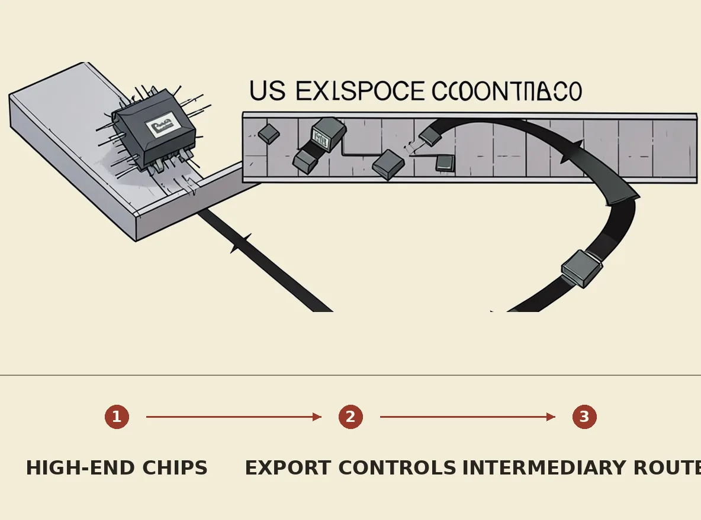

The Jensen Huang scandal is hardly over
Lead story

Nvidia CEO Jensen Huang has resigned following reports of a second affair and a board meeting considering his ouster. This development is speculated to be a pretext for deeper concerns, specifically an alleged "honeypot" by a Chinese spy and the illegal diversion of Nvidia's high-end chips to China through Southeast Asian intermediaries like Megaspeed. The situation raises significant questions about Nvidia's adherence to US export controls and the actual scope of its business operations within China.